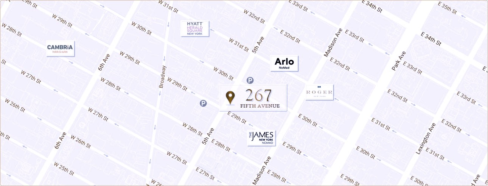

267 Fifth Avenue is a family run building offering office spaces ranging from 169 sq ft. to an entire floor of 5000 sq ft. We specialize in showrooms for textile companies, but have many other businesses in the building.
Below is a photo gallery of our many beautiful showrooms and general office spaces.
GALLERY IMAGES GO HERE
267 Fifth Avenue is located on the northeast corner of 29th street and 5th avenue, conviently located just a few blocks from the N/R, 1/9, 6 trains and Penn Station, close to midtown transportation, restaurants, hotels, and shopping.
ADD IMAGES HERE. ARE THESE LIGHTBOX IMAGES AS WELL??
ADD FORM ELEMENTS HERE